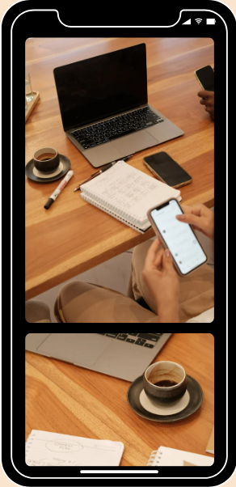

About Noske
Your #1 Music Recommender
|
About user
Our demographic is for people that is
looking to get into music but not knowing where
to start
our inspiration for this design was
how we related to a situation where a user wanted to know
more music but didn’t know how to get into it in
a way that was ‘abrasive or harsh’ to a newcomer.
The process
our group undertook to create this website included
but not limited to: brainstorming, Planning, designing,
prototyping, testing.
Our contributions to the
website was mostly per page as Noah did the genres
page while Skye did the home and popular artist page.
Together we did the
‘about me’ where Noah did
most of the text while I did most of the design
and formatting.
|

|